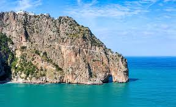
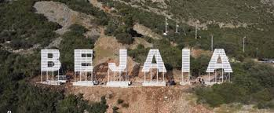
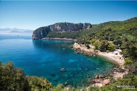

Bejaia



Béjaïa est une ville située en bordure de la mer Méditerranée à 180 km à l'est d'Alger. Elle est le chef-lieu épnonyme de la wilaya de Béjaïa et la plus grande ville de la Kabylie.
Autrefois, à l'époque Romaine la ville était connue sous le nom de Saldae, au Moyen Âge elle devient une cité très prospères devant notamment la capitale de grandes dynasties musulmanes. Du temps de la colonisation française la ville était appelé Bougie en raison de la qualité de ses chandelles faites de cire d'abeille.
En termes de population, Béjaïa est la plus grande ville de Kabylie avec notamment 187 076 habitants lors du dernier recensement datant de 2005. Du fait de sa situation géographique, elle est également le plus important pôle industriel de la région concentrant de nombreuses industries grâce à la présence d'un des plus grands ports pétroliers et commerciaux de Méditerranée.
La ville de Béjaïa dispose d'un aéroport international situé à 5 mn de la ville, d'un port pour voyageurs, d'une gare des trains et d'une gare routière.
Béjaïa dispose d'une université baptisée au nom de Abderrahmane Mira (un martyr de la guerre d'Algérie). L'établissement dispose d'un effectif de 698 enseignants pour 22 792 étudiants (2006).
Avis des visiteurs
Un endroit magnifique ! J'y suis allé l'été dernier et c'était magique. ❄️
Voir le profil de AmineLa ville est splendide mais la nature autour est très mal préservée. Je recommande ! 🌲
Voir le profil de SamiraParfait pour une randonnée en famille a yema gouraya. On y respire l'air pur.
Voir le profil de Khaled